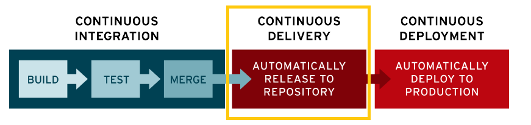
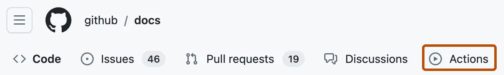

What is CI/CD?
Continuous Integration
What you need (cost)
- Your team will need to write automated tests for each new feature, bug fix.
-
You need a continuous integration server that can monitor the main repository and
run the tests automatically for every new commits pushed.
What you gain
- Less bugs appear on production
- Building the release is easy
- Testing costs are reduced – your CI server can run tests
-
Less context switching as developers are warned as soon as they break the build and
can work on fixing it before they move to another task.
- QA team spends less time testing
Continuous delivery

What you need (cost)
-
You need a strong foundation in continuous integration and your test suite needs to
cover enough of your codebase.
What you gain
-
Easier deployments. Your team doesn't have to spend days preparing for a release
anymore.
- You can release more often, and get the feedback from customers faster.
continuous deployment
What you gain
-
You can develop faster as there's no need to pause development for releases.
Deployments pipelines are triggered automatically for every change.
-
Releases are less risky and easier to fix in case of problem as you deploy small
changes.
- Customers see a continuous stream of improvements.
CI/CD tools
GitHub Actions
GitHub Actions is a CI/CD platform


workflow
Understanding the workflow file
